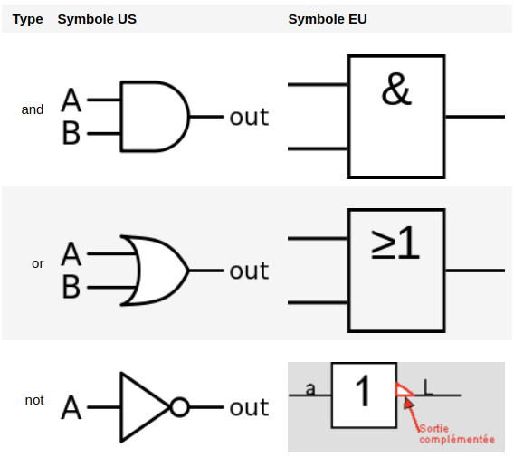
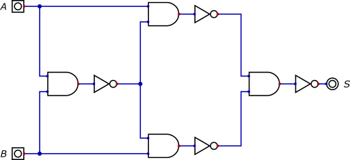
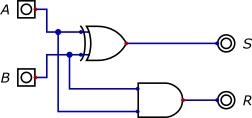
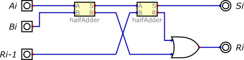
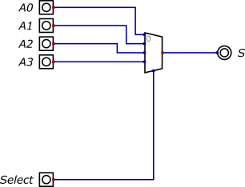

Expressions booléennes¶
Repères historiques¶
George Boole (1815-1864): mathématicien, logicien britannique, auteur d’une algèbre binaire dite booléenne n’acceptant que deux valeurs 0 et 1.
Lien vers la présentation de Marie Duflot-Kremer, chercheuse en informatique l’Université de Lorraine.
Aujourd’hui, l’algèbre de Boole trouve de nombreuses applications en informatique et dans la conception des circuits électroniques
Quelques définitions¶
On appelle valeur logique ou valeur booléenne toute valeur notée par deux symboles. On peut utiliser par exemple un des couples de valeurs suivants : {0,1}, {vrai, faux}, {true, false} ou {ouvert, fermé}.
Exemple: l’état d’un interrupteur a une valeur booléenne, il peut être ouvert ou fermé.
Une variable booléenne (ou variable logique) est une grandeur représentée par un nom et pouvant prendre des valeurs booléennes.
L’algèbre de Boole est caractérisée par la donnée:
de deux opérations binaires or et and (ou et et en français, correspondant respectivement, à la somme “+” et au produit “.”)
d’une opération unaire not (en français non, correspondant au complémentaire \(\bar{}\)).
Ces opérations doivent vérifier certaines conditions qui ne seront pas exposées ici. En mathématique on trouve aussi les notations \(\lor\) (disjonction), \(\wedge\) (conjonction) et \(\lnot\) (négation).
L’association de variables booléennes et d’opérateur(s) booléen(s) produit une expression booléenne.
Exemple: si \(a\), \(b\) et \(c\) sont trois variables booléennes, (a and b and not c) or (a and not b and c) est une expression booléenne. Remarque: l’usage de parenthèses améliore la lisibilité.
Dresser la table de vérité d’une expression booléenne signifie construire une table ayant autant de colonnes que de variables d’entrée plus une colonne donnant le résultat (vrai ou faux, 0 ou 1) pour chaque combinaison possible des variables d’entrée.
Les opérations logiques élémentaires¶
Les symboles¶
Les opérations logiques sont réalisées simplement avec des circuits électroniques (à base de transistors) appelés portes logiques. Voici les symboles des portes logiques utilisées pour les opérations and, or et not.

Note: les symboles sont très peu utilisés (même en France!).
Simulations¶
Opérateurs and, or et not¶
Simuler avec le logiciel Digital du professeur Helmut Neemann les opérations logiques and, or et not. Établir leur table de vérité.
Lois de De Morgan¶
Dresser la table de vérité de l’expression
not (A or B);Vérifier les résultats par simulation;
Proposer une expression équivalente;
Reprendre les questions 1, 2 et 3 avec l’expression
not (A and B)
Une opération logique très utilisée¶
Ouvrir le circuit “Dilemme.dig”.

Réaliser la simulation. Établir et commenter sa table de vérité.
Cette opération très utilisée a pour symbole (US):

Problèmes¶
Addition binaire¶
Demi additionneur¶
Le demi additionneur est un circuit combinatoire qui permet de réaliser la somme arithmétique de deux nombres A et B chacun sur un bit.

A la sortie on va avoir la somme S et une éventuelle retenue R.
Ouvrir le fichier “halfAdder.dig” et passer en mode simulation. Dresser alors la table de vérité de ce circuit.
En déduire la table d’addition binaire.
En utilisant la fonction d’analyse du logiciel, donner l’expression booléenne de la sortie S et de la retenue R.
Additionneur complet¶
Lorsqu’on souhaite effectuer l’addition binaire sur un bit de deux nombres \(A_i\) et \(B_i\), il faut tenir compte d’une éventuelle retenue \(R_{i-1}\) provenant du calcul du rang précédent. On a alors un additionneur complet, qui est réalisé avec deux demi-additionneurs.

A la sortie on va avoir la somme \(S_i\) et une éventuelle retenue \(R_i\).
Ouvrir le fichier “fullAdder.dig” et passer en mode simulation. Dresser la table de vérité de l’additionneur complet.
Additionneur complet en python¶
Python possède un type booléen nommé bool. Cependant, les valeurs booléenne True et Falsepeuvent être associés aux entiers 1 et 0. On peut le vérifier sur l’exemple suivant:
type(False)
A = False
print(not A)
True
A = True
B = False
print("A == 1 ? : ", A == 1)
print("B == 1 ? : ", B == 1)
print("B == 0 ? : ", B == 0)
A == 1 ? : True
B == 1 ? : False
B == 0 ? : True
Les opérateurs binaires and et or sont parfois notés . et +. Quant à l’opératuer unaire not il est parfois représenté par une barre au dessus de la variable ou de l’expression boolélenne.
Ainsi, l’expression booléenne de la sortie \(S_i\) de l’additionneur complet est
\(S_i=(\overline{A_i} \cdot \overline{Bi} \cdot R_{i-1}) + (\overline{A_i} \cdot B_i \cdot \overline{R_{i-1}}) + (A_i \cdot \overline{B_i} \cdot \overline{R_{i-1}}) + (A_i \cdot B_i \cdot R_{i-1})\).
Celle de la retenue est:
\(R_i=(A_i \cdot R_{i-1}) + (A_i \cdot B_i) + (B_i \cdot R_{i-1})\).
Enfin, en python, les opérateurs booléens sont aussi nommés and, or et not. Ainsi l’expression booléenne \(\overline{A}\cdot(B+\overline{C})\) se traduit par:
not A and (B or not C)
On définit une fonction en python ayant le code suivant:
def addb(n,a,b):
"""
Retourne ....
On suppose que a et b sont des chaines constitués des caractères
appartenant à {'0','1'}; n est un entier naturel supérieur à zéro.
"""
ri_1 = False
res = ""
for i in range(n-1,-1,-1):
ai = int(a[i])
bi = int(b[i])
si = (not ai and not bi and ri_1) or (not ai and bi and not ri_1) or \
(ai and not bi and not ri_1) or (ai and bi and ri_1)
ri_1 = (ai and ri_1) or (ai and bi) or (bi and ri_1)
res = str(int(si)) + res
if ri_1:
res = '1' + res
return res
addb(8,'11111111','00000001')
list(range(20,5,-2))
[20, 18, 16, 14, 12, 10, 8, 6]
Consulter la documentation officielle de python sur la fonction range afin de comprendre la construction qui apparait à la ligne 9.
Les spécifications étant incomplètes, expliquer ce que réalise cette fonction.
Vérifier vos hypothèses avec quelques tests; par exemple:
addb(4,'0001','0001')addb(8,'11111111','00000001')Quelle est l’utilité du test ligne 16 ?
Un circuit important: le multiplexeur (pour les plus rapides ET curieux)¶
Le multiplexeur est un circuit logique très important en architecture machine. Il permet de sélectionner une entrée parmi \(N\) et de transférer sa valeur sur la sortie. La sélection se fait à l’aide d’une entrée Select.
Principe¶
La figure ci-dessous présente le schéma de principe d’un multiplexeur à 4 entrées \(A_0 ... A_3\) ainsi que sa réalisation avec les portes logiques élémentaires.
 
Simulation¶
Ouvrir le fichier
mux2.diget passer en mode simulation.On souhaite sélectionner la deuxième entrée, quelle valeur logique doit-on affecter à \(Select_0\) et \(Select_1\)?
Réaliser la sélection précédente. Entrer la combinaison \((1,1,0,0)\) pour \((A_0,A_1,A_2,A_3)\). Que vaut \(S\) ? Expliquer.
Garder la même sélection. Donner une combinaison qui conduit à \(S=1\). Expliquer.
À retenir¶
L’algèbre de Boole est caractérisée par les trois opérations or, and et not. Avec ces opérateurs et des variables booléennes on peut construire des expressions logiques.
Dresser la table de vérité d’une expression signifie construire un tableau qui donne la valeur logique de l’expression pour chaque combinaison des variables d’entrées.
Quelques résultats importants:
A |
B |
A or B |
A and B |
not A |
|---|---|---|---|---|
0 |
0 |
0 |
0 |
1 |
1 |
0 |
1 |
0 |
0 |
1 |
1 |
1 |
1 |
0 |
0 |
1 |
1 |
0 |
1 |

Ce(tte) œuvre est mise à disposition selon les termes de la Licence Creative Commons Attribution - Pas d’Utilisation Commerciale 4.0 International.